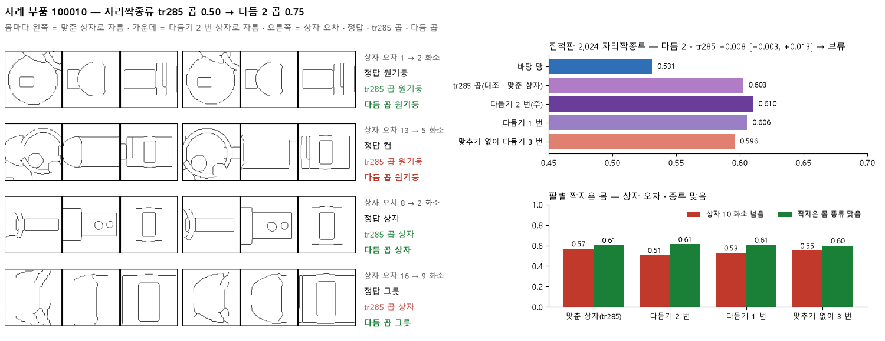

실험 m2_tr0286_h037_상자다듬기
목표 G1.2 view 모음 → 파츠별 CAD code(CadQuery · 그 전 「3 면도 → 파츠별 CAD」 · 지금 M2 는 위 · 앞 · 옆 고정 세 장만 받음 → 아무 각도 N 장으로 바꿀 것 · 11-20) · G1 첫 제품 — 피규어 · 메카 사진 여러 장 + 치수 → 숨은선 3 면도 + 파츠별 CAD · G0 임의의 이미지 → CAD 코드 · 빌린 가정 3: 생성기기하 · 정답3D · 정사영 · 갚는 계획: 탐색 · 생성기 부품 · 고정 시험지 2,024 · 다듬기 망은 학습 부품(몸 2 개 이상)만으로 배움 — 오르면 다듬기 → 분류기를 번갈아(종류 · 축도 같이) · 상자 오차 남은 몫 · 흐린 view · m1 view 로 버팀(Sc) · 목표 시험지 값: 안 잼 (!)
맞춘 망 상자를 상자 다듬기 망으로 고친 뒤 잘라 tr285 곱으로 고르면, 진척판(2,024) 자리짝종류가 tr285 보다 오르나?
판정 · H37 보류(+0.008 [+0.003, +0.013] · 구간이 지지선 0.01 에 걸침) — 맞춘 상자를 다듬기 망으로 2 번 고쳐 자르면 진척판 자리짝종류 0.603 → 0.610 · 오름은 진짜(구간 아래 > 0)지만 작음 · 상자 10 넘음 57 → 51 % · 10 넘게 어긋난 몸은 다듬어도 88 % 가 10 넘음 · 잘라 고치는 길이 0.61 언저리에서 작게만 오름 · 다음: 망의 몸 나누기 자체(칸이 정답 몸에 어떻게 걸리는지 진단) · 입력 선만으로 몸 묶기(dd) · 개수 고치기
| 가설 | 주장 | 결과 | 근거 |
|---|---|---|---|
| H37 | 다듬기 망으로 고친 상자로 자르면 맞춘 상자로 자를 때보다 몸 분류기 × 망 곱이 짝지은 몸을 더 맞힌다 | 보류 | tr285 곱 0.6027 → 다듬 2 곱 0.6104 · 묶음겹침 0.752 → 0.759 · 개수맞음 0.568 그대로 · 같이: 다듬 1 0.606(+0.003 [−0.001, +0.008]) · 맞추기 없는 망 상자 → 다듬 3 0.596(−0.007 [−0.014, +0.000]) · 짝지은 몸 8,360 상자 오차(가운데값 · 10 넘음 · 3 안 · 종류 맞음): 맞춘 상자 14.5 · 0.570 · 0.290 · 0.606 / 다듬 2 10.4 · 0.508 · 0.278 · 0.613 / 다듬 1 11.6 · 0.529 · 0.292 · 0.608 / A 다듬 3 11.8 · 0.551 · 0.082 · 0.600 · 맞춘 상자 오차별(몸 · tr285 · 다듬 2 맞음 · 다듬 뒤 10 넘음): 3 안 2,423 0.937 · 0.933 · 0.002 / 3 ~ 10 1,174 0.750 · 0.757 · 0.029 / 10 넘음 4,763 0.402 · 0.415 · 0.883 · 몸 수별 tr285 → 다듬 2: 3 개 0.759 → 0.767 · 4 개 0.624 → 0.638 · 5 개 0.524 → 0.537 · 6 개 0.450 → 0.446 · dev 미리 10 넘음 60.2 → 53.8 % · 학습 10 바퀴 검증 10 넘음 54 → 37 % |
분석
한 줄로
물음: 맞춘 망 상자를 「상자 다듬기 망」으로 고친 뒤 잘라 tr285 곱으로 고르면, 진척판 자리짝종류가 tr285 보다 오르나?
답: 조금 오른다 — 보류. 진척판 2,024 부품에서 0.603 → 0.610(+0.008 [+0.003, +0.013])이다. 구간 아래가 0 위라 오른 것은 맞지만, 구간이 지지선 +0.01 에 걸친다. 다듬기는 상자를 정답 쪽으로 당기지만 딱 맞추지는 못한다.
왜 이 실험을 했나
tr285 에서 틀리는 짝지은 몸의 대부분은 상자가 10 화소 넘게 어긋난 몸이었다. 처음엔 실루엣 맞추기를 세게 하면 된다고 보았다. 그런데 카드 전에 처음 보는 dev 부품 96 개(진척판과 안 겹침)로 재 보니 그 길은 막혀 있었다. 정답 종류와 축을 줘도 41 % 가 10 화소를 넘었다. 정답 배치의 실루엣 손실이 맞춘 배치보다 낮은 부품도 55 % 뿐이었다. 실루엣으로는 몸 배치를 가릴 수 없다. 그래서 잘린 그림에서 종류를 배웠듯이 상자도 배우게 했다. 우리 목표는 도면 → CAD 코드이고, 이 자는 「몸마다 종류를 맞혔나」를 본다.
바꾼 것 하나
몸 분류기에 넣을 상자만 바꿨다. 맞춘 상자를 다듬기 망으로 두 번 고친 상자를 쓴다. 다듬기 망은 상자를 사방으로 넓혀 잘라(약 17 화소), 자리로 짝지은 정답 상자가 어디인지 배운다. 학습은 tr285 와 같은 학습 부품 10,510 개에서 했다. 망 상자를 넣은 몸 40,192 개와 정답 상자를 넣은 몸 40,314 개(그대로 내야 함)를 썼다. 분류기 · 온도 · 고르기 · 맞춘 상자는 tr285 와 같다. 카드는 진척판을 재기 전에 커밋했다(58253907).
결과

| 진척판 2,024 | 다듬기 2 번(주) | tr285 곱(대조) | 판정선 | 넘었나 |
|---|---|---|---|---|
| 자리짝종류 | 0.610 | 0.603 | 차 ≥ +0.01 · 아래 > 0 | 아니오(+0.008 [+0.003, +0.013] · 보류) |
| 짝지은 몸 상자 10 화소 넘음 | 51 % | 57 % | — | — |
| 상자 오차 가운데값 | 10.4 화소 | 14.5 화소 | — | — |
자리짝종류 = 망이 낸 몸을 정답 몸과 자리로 짝지어 종류가 같은 비율(진척판 자). 같이 잰 팔: 다듬기 1 번 0.606 · 맞추기 없이 망 숫자 상자를 세 번 다듬음 0.596.
왜 이렇게 나왔나
확인한 것
- 다듬기는 상자를 정답 쪽으로 당긴다. 10 화소 넘음이 57 → 51 %, 가운데값이 14.5 → 10.4 화소다.
- 그러나 딱 맞추지는 못한다. 3 화소 안 비율은 0.29 → 0.28 그대로다. 맞춘 상자가 10 화소 넘게 어긋났던 몸 4,763 개 중 88 % 는 다듬어도 10 화소를 넘는다. 그 몸들의 종류 맞음은 0.40 → 0.42 로만 오른다.
- 이미 맞는 상자(3 화소 안)는 거의 망치지 않는다(종류 맞음 0.937 → 0.933).
- 맞추기를 빼고 다듬기만 하면 0.596 으로 tr285 보다 낮다. 실루엣 맞추기는 여전히 필요하다.
- 다듬기 망은 학습 쪽 검증에서 10 화소 넘음을 54 → 37 % 로 줄였지만, 처음 보는 dev 부품에서는 60 → 54 % 로 덜 줄였다.
짐작 (아직 확인 안 함)
- 크게 어긋난 상자는 망이 몸을 잘못 나눈 결과일 것이다. 칸 하나가 정답 몸 둘에 걸치거나, 축이 틀린 경우다. 그렇다면 칸마다 잘라 고치는 길로는 못 고친다.
- 몸 3 ~ 6 개 부품을 본 적 없는 다듬기 망이 붐비는 그림에서 덜 고친다.
한계
- 다듬기 망은 몸 2 개 이상 학습 부품으로만 배웠다. 학습 입력은 맞추기 없는 망 상자이고, 시험은 맞춘 상자다.
- 분류기는 다듬은 상자 그림을 본 적이 없다.
- 판정선 +0.01 은 dev 숫자를 보고 정했다. 다듬기 망 하나 · 씨 하나다.
- 상자 오차는 정답 상자로 잰 것이라 시험 때는 모른다.
배운 것과 다음
잘라 고치는 길은 tr284 ~ 286 에서 0.59 → 0.60 → 0.61 로 작게만 오른다 — 남은 막힘은 칸마다의 상자가 아니라 망의 몸 나누기 자체로 보인다.
- 진단: 크게 어긋난 칸이 정답 몸에 어떻게 걸리는지 센다(정답 몸 둘에 걸침 · 정답 몸 없음 · 축만 틀림).
- 입력 선만으로 몸 묶기(dd 의 길)와 붙인다 — 망 칸에 기대지 않는 나누기.
- 개수 고치기(상한 0.05).
실험 기록
- 카드(진척판 전 커밋 58253907 · H37_A_Fi · 식 · 판정식 · 진척 칸) · 다듬기286.py(자르기 · 학습 · 미리 · 흐름 · 재기 · 그림) · 축천장286.py(카드 전 맞추기 천장 확인) · 잼.json · 흐름.png · 결과.png · 원본 out/설명/캐드부품/모델286(다듬.npz 80,506 · 다듬망.pt · 학습.json · 미리.json · 셈.npz · 미리/ dev 맞춤)
- 다듬기 망 10 바퀴: 손실 0.031 → 0.021 · 검증 10 넘음 54 → 37 % · 정답 상자 입력을 3 화소 넘게 망침 0.017 → 0.055.
- 맞춤267.그리기 에 몸마다 인자를 더함(기본 동작 그대로 · 선 항 확인용).
- Lean: 판정 못 채움(보류) · 하네스/lean/증명나무_tr0286.H37.png.